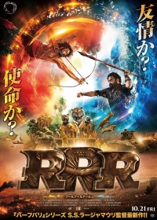
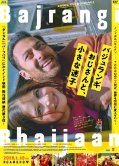

1⃣ RRR |
あらすじ |
|
|  |
舞台は1920年、英国植民地時代のインド。 英国軍にさらわれた幼い少女を救うため、立ち上がるビーム。 大義のため英国政府の警察となるラーマ。 熱い思いを胸に秘めた男たちが運命に導かれて出会い、唯一無二の親友となる。 しかし、ある事件をきっかけに究極の選択を迫られることに。彼らが選ぶのは、友情か？使命か？ |
|
2⃣ Bajrangi Bhaijaan |
あらすじ |
|
|  |
パキスタンの小さな村に住む女の子シャヒーダー。
幼い頃から声が出せない障害を持った彼女を心配したお母さんと一緒に、インドのイスラム寺院に願掛けに行くが、
帰り道で一人インドに取り残されてしまう。 そんなシャヒーダーが出会ったのは、ヒンドゥー教のハヌマーン神の熱烈な信者のパワンだった。 バカがつくぐらいの正直者で、お人好しなパワンは、これも、ハヌマーンの思し召しと、母親とはぐれたシャヒーダーを預かることにしたが、 ある日、彼女がパキスタンのイスラム教徒と分かって驚愕する。 歴史、宗教、経済など様々な部分で激しく対立するインドとパキスタン。 それでもパスポートもビザもなしに、国境を越えてシャヒーダーを家に送り届けることを決意したパワンの旅が始まった。 果たしてパワンは無事にシャヒーダーを母親の元へ送り届けることができるのか!? |
|
3⃣ きっとうまくいく |
あらすじ |
|
|
あなたの人生が光り輝くヒントがきっとある！ 大学時代の親友3人が織りなす、至高の人生感動エンターテインメント。 舞台は日の出の勢いで躍進するインドの未来を担うエリート軍団を輩出する、超難関理系大学ICE。 未来のエンジニアを目指す若き天才が競い合うキャンパスで、型破りな自由人のランチョー、機械よりも動物が大好きなファラン、なんでも神頼みの苦学生ラージューの“三バカトリオ”が、鬼学長を激怒させるハチャメチャ珍騒動を巻き起こす。 彼らの合言葉は「きっと、うまくいく！！」 抱腹絶倒の学園コメディに見せかけつつ、行方不明になったランチョーを探すミステリー仕立ての“10年後”が同時進行。その根底に流れているのは、学歴競争が過熱するインドの教育問題に一石を投じて、真に“今を生きる”ことの素晴らしさを問いかける万国普遍のテーマなのだ。 |